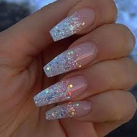
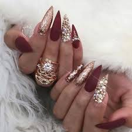
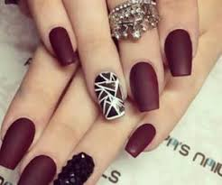
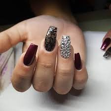

TIPOS
EJEMPLO
DESCRIPCCION
DE GEL

Las uñas de gel son un tipo de uñas similares a las uñas acrílicas aunque con
un acabado que podemos decir más natural. Este tipo de uñas son ahora tendencia de modo que si deseas llevar tus uñas a la última te recomendamos que apuestes por ellas y es que como te vamos a mostrar, puedes decorarlas como más te gusten y siempre con un resultado espectacular.
un acabado que podemos decir más natural. Este tipo de uñas son ahora tendencia de modo que si deseas llevar tus uñas a la última te recomendamos que apuestes por ellas y es que como te vamos a mostrar, puedes decorarlas como más te gusten y siempre con un resultado espectacular.
ACRILICAS

Las uñas acrílicas son imprescindibles para poder decir que hemos completado nuestro “look”.
En 2018 prácticamente todas las chicas o mujeres desean poder hacerse o decorar sus uñas de manera acrílica. Las uñas acrílicas decoradas son de hecho esenciales para los mejores estilos de la mujer actual y a la vanguardia de todo que además, desee verse atractiva.
SOLARES

Afines a las uñas de acrílico, que tienen la apariencia de una manicura francesa (color natural de la uña con la punta blanca), son una versión mejorada y más cara de las uñas de acrílico, puesto que duran más tiempo, más o menos tres semanas en lugar de dos.
ESCULPIRAS

Las uñas esculpidas son la forma más duradera de uñas artificiales, pero requieren trabajarse regularmente para conservar su naturalidad. Para hacerlas, se requiere ir esculpiendo y alargando una lámina de metal, que tendrá la forma de la uña.
PORCELANA

Las uñas de porcelana se ven parecidas a las de acrílico, pero requieren de constante cuidado y pueden ser más caras y más frágiles. Si quieres saber más de ellas, lee este artículo, que te recomendamos.